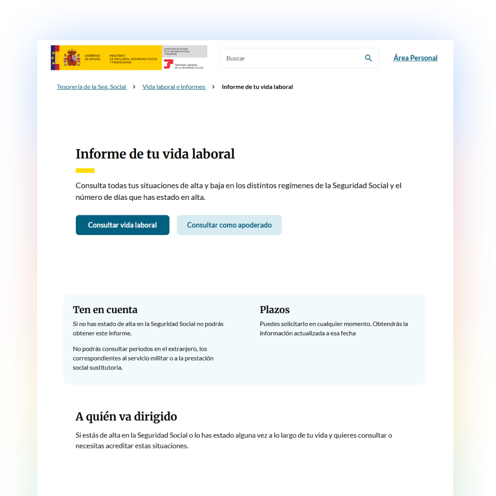

01El problema
Texto placeholder: la administración pública ofrecía cientos de trámites repartidos en decenas de sedes electrónicas, cada una con su propio lenguaje, navegación y requisitos. El ciudadano no sabía dónde empezar, y abandonaba o acababa haciendo el trámite de forma presencial.
Texto placeholder: el encargo inicial era "reunir todos los trámites en una sola app". Pero agrupar complejidad no la elimina — solo la concentra.
Reunir todos los trámites en una app no aportaría valor si antes no se simplificaban y estandarizaban.
02Estudio de los trámites y del ciudadano
Texto placeholder: analizamos el catálogo de trámites para entender su estructura real: pasos, documentos requeridos, estados y vocabulario. La variabilidad era enorme incluso entre trámites equivalentes.
Texto placeholder: del lado del ciudadano, el patrón fue consistente: no le importa qué organismo gestiona el trámite, solo quiere terminarlo.
Título del hallazgo uno
Texto placeholder: describe aquí el primer hallazgo del análisis — por ejemplo, la fragmentación de sedes y lenguajes que desorientaba al ciudadano.

Título del hallazgo dos
Texto placeholder: describe aquí el segundo hallazgo — por ejemplo, qué pasos y estados se repetían en todos los trámites y podían estandarizarse.
Si simplificamos y estandarizamos todos los trámites para que compartan un mismo patrón de navegación, el ciudadano podrá completar cualquier trámite sin aprender a usar cada uno por separado.
03Decisiones y trade-offs
Texto placeholder: la decisión clave fue no tratar cada trámite como una pieza única, sino diseñar un sistema común. Puse foco en tres elementos:
- Un patrón de navegación único — Texto placeholder: todos los trámites comparten la misma estructura de pasos, revisión y confirmación.
- Lenguaje ciudadano, no administrativo — Texto placeholder: tradujimos el vocabulario jurídico a acciones comprensibles.
- Estados estandarizados — Texto placeholder: cualquier trámite comunica su progreso con el mismo sistema de estados.
04Rediseño
Texto placeholder: tras estandarizar los trámites, lanzamos la nueva Carpeta Ciudadana. Resultados:
- La app más descargada de la administración pública española — con 6.8M de usuarios.
- Dos premios nacionales — Texto placeholder: nombra aquí los premios.
- Lo que no vi venir — Texto placeholder: cuenta aquí lo que salió distinto a lo planeado.

Texto placeholder: la lección del caso en una frase — por ejemplo, estandarizar no es uniformizar: es quitarle al ciudadano el peso de aprender cada trámite.
05Por qué este caso está en mi portfolio
Texto placeholder: no por las descargas ni los premios. Está aquí porque muestra cómo cuestionar el encargo inicial (agrupar no es resolver), cómo convertir cientos de casos particulares en un sistema, y el impacto que tiene el diseño cuando alcanza a millones de personas.